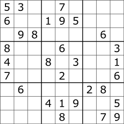
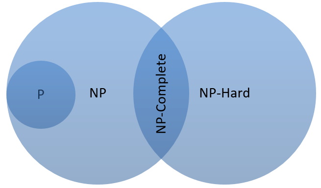
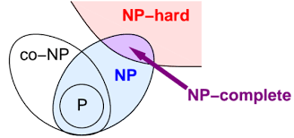

Let's understand the classes into which any computational problem can be classified.

1. P (Polynomial) Problems

P problems are those that can be solved by an algorithm in a polynomial amount of time. This means the time complexity is a polynomial function of the input size, such as O(1), O(n), O(n log n), or O(n²). These problems are generally considered 'easy' or 'efficiently solvable' by computers, as their run times don't grow excessively large with bigger inputs.
2. NP (Non-deterministic Polynomial) Problems
NP problems are a class of problems for which a given solution can be verified in polynomial time. It does not mean they are "non-polynomial" to solve. While many NP problems have no known polynomial-time solution (e.g., O(n!) or O(2ⁿ)), the key is that checking a potential answer is fast.
A classic example is a Sudoku puzzle. Finding the solution from scratch can be very time-consuming, requiring extensive trial and error (backtracking). However, if someone gives you a completed Sudoku grid, you can quickly verify if it's correct by checking each row, column, and 3x3 box for duplicates. This verification process has a polynomial run-time.
In short: NP problems are easy to check, even if they are hard to solve. A major open question in computer science is whether P = NP, i.e., whether every problem that can be quickly verified can also be quickly solved.
3. NP-Hard Problems
A problem is classified as NP-Hard if it is "at least as hard as the hardest problems in NP". More formally, a problem H is NP-Hard if every problem L in NP can be reduced to H in polynomial time. This means if you could find a magical, fast algorithm for an NP-Hard problem, you could use it to solve every single NP problem quickly.
An NP-Hard problem does not have to be in NP itself (meaning, it might not be easy to verify a solution).
4. NP-Complete Problems
NP-Complete problems are the problems that are both in NP and are NP-Hard. These are, in a sense, the "hardest" problems in the NP class.
To be NP-Complete, a problem must satisfy two conditions:
- It must be in the NP class (a given solution can be verified quickly).
- It must be NP-Hard (every other NP problem can be reduced to it in polynomial time).
Examples of NP-Complete problems include the Traveling Salesman Problem and the Boolean Satisfiability Problem (SAT).